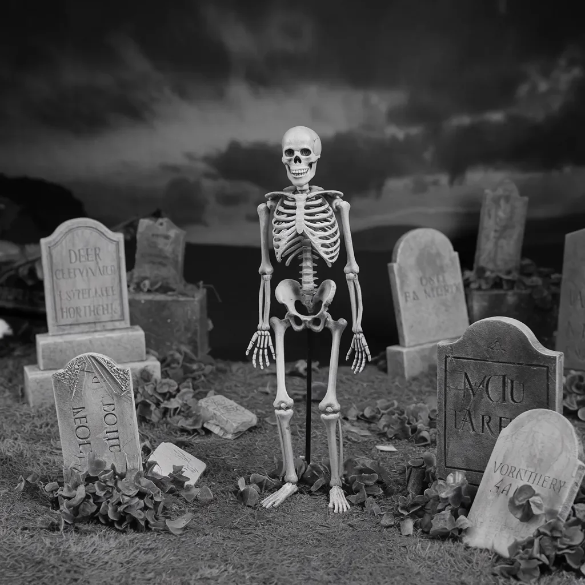

달은 낮고 부풀어 레이븐스우드 묘지 위에 걸려 있었고, 그 병든 빛은 풍화된 묘비에 달라붙은 짙은 안개를 간신히 뚫고 있었다. 제이크, 릴리, 조이, 그리고 그들의 친구들은 무덤 사이에 모여 있었고, 그들의 웃음소리는 밤의 고요함 속에서 부자연스럽게 메아리쳤다.
[The moon hung low and bloated over Ravenswood Cemetery, its sickly light barely penetrating the thick fog that clung to the weathered tombstones. Jake, Lily, Zoe, and their friends had gathered among the graves, their laughter echoing unnaturally in the stillness of the night.]
“감히 너에게 윌킨스 노인의 무덤을 만져보라고 도발한다.” 알렉스가 거짓 용기로 두꺼워진 목소리로 말했다.
[“I dare you to touch old man Wilkins’ grave,” Alex taunted, his voice thick with false bravado.]
미아는 앞으로 나서며 손가락을 뻗어 부서져가는 돌을 향했다. 그녀의 손이 닿자, 고대의 뼈가 부러지는 듯한 소리가 대지를 울렸다. 십대들은 얼어붙었고, 그들의 즐거움은 목구멍에서 사그라졌다.
[Mia stepped forward, her fingers outstretched towards the crumbling stone. As her hand made contact, a sound like the cracking of ancient bones reverberated through the earth. The teenagers froze, their mirth dying in their throats.]
땅은 처음에는 부드럽게, 그 다음에는 점점 더 격렬하게 떨기 시작했다. 균열이 묘지를 거미줄처럼 뒤덮었고, 대지는 마치 무서운 출산의 진통을 겪는 것처럼 위로 솟구쳤다. 이 균열에서 손이 나타났다. 창백하고 썩어가는 사지가 필사적인 굶주림으로 공기를 할퀴었다.
[The ground began to tremble, softly at first, then with increasing violence. Cracks spider-webbed across the cemetery, earth heaving upwards as if in the throes of some terrible birth. From these fissures emerged hands—pallid, decaying appendages clawing at the air with desperate hunger.]
에단의 비명이 밤을 찢었다. 시체가 그의 발 앞 땅에서 튀어나왔기 때문이다. 말라비틀어진 살점으로 겨우 붙어있는 턱이 소리 없이 딱딱거리며 그의 발목을 물었다. 에단은 쓰러졌고, 그의 머리는 메스꺼운 소리를 내며 묘비에 부딪혔다. 그 생물체가 검은 이빨로 그의 종아리에서 살점을 뜯어내기 시작하자 피가 그의 몸 아래로 고였다.
[Ethan’s scream pierced the night as a corpse erupted from the soil at his feet. Its jaw, hanging by strips of desiccated flesh, gnashed soundlessly as it latched onto his ankle. Ethan toppled, his head striking a tombstone with a sickening crack. Blood pooled beneath him as the creature began to feast, tearing chunks of flesh from his calf with blackened teeth.]
공포가 무리 사이에서 폭발했다. 올리비아는 뒤로 비틀거리다가 발꿈치가 드러난 뿌리에 걸렸다. 그녀는 팔을 허우적거리며 곧바로 무덤에서 기어나오는 시체의 손아귀에 떨어졌다. 가죽같은 피부로 싸인 뼈에 불과한 손가락이 그녀의 뺨을 파고들었다. 시체가 그녀를 가까이 끌어당겨 이빨을 그녀의 부드러운 목살에 박자 그녀는 비명을 질렀다. 피가 원호를 그리며 튀어 근처의 묘비를 진홍색으로 물들였다.
[Panic erupted among the group. Olivia stumbled backwards, her heel catching on an exposed root. She fell, arms flailing, directly into the grasp of a cadaver pulling itself from its grave. Its fingers, little more than bone wrapped in leathery skin, dug into her cheeks. She shrieked as it pulled her close, sinking its teeth into the soft flesh of her throat. Blood sprayed in an arc, painting nearby headstones crimson.]
노아는 도망치려고 돌아섰지만, 비틀거리며 걷는 시체들의 벽에 가로막혔다. 그들은 썩어가는 살과 굶주림의 뭉치가 되어 그에게 달려들었다. 그들이 그를 찢어발기며 무서운 효율성으로 뼈에서 살을 뜯어내자 그의 비명은 묻혀버렸다.
[Noah turned to run, only to find his path blocked by a wall of shambling corpses. They descended upon him, a writhing mass of decay and hunger. His cries were muffled as they tore into him, ripping flesh from bone with terrifying efficiency.]
제이크는 릴리와 조이의 손목을 잡고 대학살에서 그들을 끌어냈다. “도망쳐!” 그가 공포로 목이 갈라진 목소리로 고함쳤다.
[Jake grabbed Lily and Zoe by their wrists, yanking them away from the carnage. “Run!” he bellowed, his voice cracking with terror.]
그들이 도망치는 동안, 엠마의 고통에 찬 비명이 그들 뒤에서 메아리쳤다. 제이크는 감히 뒤를 돌아보며, 그녀가 죽지 않은 사람들의 무리에 맞서 헛된 투쟁을 하는 것을 목격했다. 그들은 그녀를 찢어발기고 있었고, 그녀의 내장은 그녀가 공포와 불신의 눈으로 지켜보는 가운데 이슬에 젖은 잔디 위로 쏟아져 나왔다.
[As they fled, Emma’s agonized screams echoed behind them. Jake dared a glance back, witnessing her futile struggle against a horde of the undead. They were pulling her apart, her innards spilling onto the dew-damp grass as she watched, eyes wide with horror and disbelief.]
세 명의 생존자는 묘비의 미로를 뛰어다녔고, 발을 질질 끄는 소리와 비인간적인 신음소리가 사방에서 다가오고 있었다. 부패의 악취가 공기를 가득 채웠고, 죽음의 독기가 그들의 콧구멍에 달라붙고 혀를 덮었다.
[The three survivors raced through the maze of tombstones, the sounds of shuffling feet and inhuman groans closing in from all sides. The stench of decay filled the air, a miasma of death that clung to their nostrils and coated their tongues.]
그들이 묘지 문에 다다랐을 때, 제이크는 발목을 잡는 손을 느꼈다. 그는 땅에 쓰러지며, 턱이 땅에 부딪히자 비명을 질렀다. 등을 대고 누워서, 그는 한때 알렉스였던 것의 흐릿하고 보이지 않는 눈을 응시하게 되었다. 그의 친구의 피부는 녹색을 띠었고, 입술은 피에 얼룩진 이빨을 드러내며 경련하는 듯한 웃음을 짓고 있었다.
[As they neared the cemetery gates, Jake felt a hand grasp his ankle. He tumbled to the ground, crying out as his chin struck the earth. Rolling onto his back, he found himself staring into the milky, sightless eyes of what had once been Alex. His friend’s skin had taken on a greenish hue, his lips pulled back in a rictus grin revealing bloodstained teeth.]
제이크는 필사적으로 발길질했고, 그의 발꿈치가 알렉스의 턱에 부딪혔다. 축축한 소리가 났고, 그 생물체의 손아귀가 풀렸다. 비틀거리며 일어선 제이크는 릴리와 조이와 합류했고, 그들 셋은 묘지 문을 박차고 나와 그 너머의 빈 거리로 뛰쳐나갔다.
[Jake kicked frantically, his heel connecting with Alex’s jaw. There was a wet snap, and the creature’s grip loosened. Scrambling to his feet, Jake rejoined Lily and Zoe, the three of them bursting through the cemetery gates and into the empty street beyond]
그들은 폐가 타는 듯한 고통을 느끼며 달렸고, 뒤쫓는 소리는 점점 희미해졌다. 하지만 아드레날린이 가라앉기 시작하자, 새로운 공포가 그들을 사로잡았다. 멀리서 비명소리가 들려왔다 - 도시는 탈출구가 없을지도 모르는 악몽에서 깨어나고 있었다.
[They ran, lungs burning, the sounds of pursuit fading behind them. But as the adrenaline began to ebb, a new terror took hold. For in the distance, they could hear screams—the city was awakening to a nightmare from which there might be no escape.]
세 사람은 어둠에 휩싸인 거리를 비틀거리며 걸었고, 그들의 거친 숨소리는 멀리서 들려오는 비명과 비인간적인 신음 소리와 뒤섞였다. 제이크, 릴리, 조이는 버려진 주유소에서 피신처를 찾았고, 깜빡이는 형광등 불빛이 그들의 피 묻은 얼굴 위로 섬뜩한 창백함을 드리웠다.
[The trio stumbled through the darkened streets, their ragged breaths punctuating the cacophony of distant screams and inhuman groans. Jake, Lily, and Zoe sought refuge in an abandoned gas station, its flickering fluorescent lights casting an eerie pallor over their blood-spattered faces.]
“문을 막아야 해.” 제이크가 지쳐서 쉰 목소리로 속삭였다.
[“We need to barricade the doors,” Jake rasped, his voice hoarse from exertion and terror.]
그들이 선반과 자판기를 입구에 밀어 넣는 동안, 조이는 릴리의 팔뚝에 선홍색 얼룩이 묻어 있는 것을 발견했다. “릴리,” 그녀가 떨리는 목소리로 속삭였다. “너 피 나고 있어.”
[As they pushed shelves and vending machines against the entrances, Zoe noticed a smear of crimson on Lily’s forearm. “Lily,” she whispered, her voice trembling, “you’re bleeding.”]
릴리는 상처를 살펴보며 눈을 크게 떴다. 그것은 단순한 긁힌 상처가 아니었다. 분명히 이빨 자국이었다. “아니야,” 그녀는 숨을 내쉬었다. “아니야, 아니야, 아니야…”
[Lily’s eyes widened as she examined the wound. It wasn’t a simple scrape, but a crescent of punctures—unmistakably teeth marks. “No,” she breathed, “no, no, no…”]
제이크가 다가왔다. 그의 얼굴은 공포로 가득 차 있었다. “언제 일어난 일이야?”
[Jake approached, his face a mask of dread. “When did this happen?”]
“나… 나도 몰라,” 릴리가 더듬거리며 말했다. 그녀의 몸은 떨기 시작했다. “아마도 우리가 묘지 담을 넘을 때였을 거야.”
[“I… I don’t know,” Lily stammered, her body beginning to quake. “Maybe when we were climbing over the cemetery wall?”]
무거운 침묵이 그들 사이에 내려앉았다. 저주받은 자들의 합창만이 멀리서 들려올 뿐이었다. 그들은 모두 이것이 무엇을 의미하는지 알고 있었다 - 릴리는 감염되었다.
[A heavy silence fell over them, broken only by the distant chorus of the damned. They all knew what this meant—Lily was infected.]
시간은 마치 수 세기처럼 느리게 흘러갔다. 제이크와 조이는 변화가 그들의 친구를 사로잡는 것을 무력하게 지켜볼 수밖에 없었다. 릴리의 피부는 창백해졌고, 잉크 강처럼 어두운 정맥이 피부 아래로 드러났다. 그녀는 더러운 리놀륨 바닥에서 몸부림쳤고, 열과 고통으로 몸을 떨었다.
[Hours passed like centuries. Jake and Zoe watched helplessly as the transformation took hold of their friend. Lily’s skin grew ashen, her veins darkening beneath the surface like rivers of ink. She writhed on the grimy linoleum floor, her body wracked with fever and pain.]
“타들어가,” 그녀는 흐느끼며 말했다. 눈은 뒤로 돌아갔다. “오 신이시여, 불타!”
[“It burns,” she whimpered, her eyes rolling back in her head. “Oh God, it burns!”]
갑자기, 그녀는 등을 활처럼 구부렸고, 목구멍에서 터져 나오는 듯한 비명을 질렀다. 그 소리는 거의 인간의 것이 아니었다. 이해할 수 없는 고통을 말하는 울부짖음이었다. 그녀는 바닥을 손톱으로 긁었고, 손톱은 부서지고 찢어졌다.
[Suddenly, she arched her back, a guttural scream tearing from her throat. The sound was barely human, a wail that spoke of agony beyond comprehension. Her fingers clawed at the floor, nails splintering and tearing as she thrashed.]
제이크는 고개를 돌렸다. 그 광경을 견딜 수 없었기 때문이다. 하지만 조이는 공포에 사로잡힌 채 바라보았다. 릴리의 피부는 군데군데 벗겨지기 시작했고, 그 아래로 회색빛 근육이 드러났다. 부패한 냄새가 좁은 공간을 가득 채웠고, 조이는 구역질을 느꼈다.
[Jake turned away, unable to bear the sight, but Zoe watched in horrified fascination. Lily’s skin began to slough off in places, revealing patches of grayish muscle beneath. The stench of rot filled the small space, causing Zoe to gag.]
병든 듯한 주황색으로 하늘을 물들이며 새벽이 밝아왔고, 릴리의 비명은 마침내 잦아들었다. 그녀는 가만히 누워 있었다. 더 이상 숨을 쉬지 않았다. 제이크는 조심스럽게 다가가 맥박을 확인하려고 손을 뻗었다.
[As dawn broke, painting the sky in hues of sickly orange, Lily’s screams finally subsided. She lay still, her chest no longer rising and falling with breath. Jake approached cautiously, reaching out to check for a pulse.]
순식간에, 릴리의 손이 튀어나와 제이크의 손목을 비인간적인 힘으로 움켜쥐었다. 그녀의 눈이 번쩍 뜨였다. 더 이상 따뜻한 갈색이 아니었다. 우윳빛 하얀색이었고, 동공이나 홍채는 없었다. 그녀의 턱은 잠시 동안 소리 없이 움직이다가 목에서 우렁찬 으르렁거림이 터져 나왔다.
[In a blur of motion, Lily’s hand shot out, grasping Jake’s wrist with inhuman strength. Her eyes snapped open, no longer the warm brown they once were, but a milky white, devoid of pupil or iris. Her jaw worked soundlessly for a moment before a guttural growl emerged.]
제이크는 팔을 빼내 비틀거리며 뒤로 물러섰다. “릴리?” 그가 목이 갈라진 목소리로 불렀다. 하지만 그 죽은 눈동자에는 어떤 인식도 없었다. 오직 굶주림뿐이었다.
[Jake yanked his arm free, stumbling backwards. “Lily?” he called, his voice cracking. But there was no recognition in those dead eyes, only hunger.]
릴리였던 그것이 이를 드러내며 덤벼들었다. 제이크는 황급히 피했지만, 그녀의 손톱이 그의 종아리를 할퀴고 지나가 깊고 피 흘리는 상처를 남겼다.
[The thing that had been Lily lunged, teeth bared. Jake scrambled away, but not before her nails raked across his calf, leaving deep, weeping furrows.]
지금까지 공포에 얼어붙어 있던 조이가 행동에 나섰다. 그녀는 카운터 뒤에서 대걸레를 잡아 무릎으로 자루를 부러뜨려 뾰족한 끝을 만들었다. 고뇌에 찬 비명과 함께, 그녀는 그 임시변통의 무기를 릴리의 관자놀이에 꽂았다.
[Zoe, frozen in terror until now, sprang into action. She grabbed a mop from behind the counter, snapping the handle over her knee to create a jagged point. With a cry of anguish, she drove the makeshift weapon into Lily’s temple.]
그 생물체는 쓰러졌다. 몇 번 경련을 일으키더니 가만히 누웠다. 짙고 엉긴 피가 상처에서 흘러나와 바닥에 고였다.
[The creature collapsed, twitching for several moments before going still. Dark, congealed blood oozed from the wound, pooling on the floor.]
조이는 무릎을 꿇고 게워냈다. 제이크는 절뚝거리며 그녀 곁으로 가 어깨에 위로의 손길을 얹었다. 하지만 그렇게 하면서, 그는 다리의 상처에서 이상한 따끔거리는 감각이 느껴지는 것을 알아챘다.
[Zoe dropped to her knees, retching. Jake limped to her side, placing a comforting hand on her shoulder. But as he did so, he noticed a strange tingling sensation creeping up from the gashes on his leg.]
그는 조이의 시선을 마주했고, 둘 다 공포가 밀려오는 것을 깨달았다. 그들의 악몽은 아직 끝나지 않았다. 밖에서는 죽지 않은 사람들의 신음소리가 점점 가까워졌고, 멀리서 사이렌이 쓸모없는 경고를 울부짖고 있었다.
[He met Zoe’s gaze, both of them realizing with dawning horror that their nightmare was far from over. Outside, the moans of the undead grew closer, and somewhere in the distance, a siren wailed its futile warning.]
병든 듯한 황혼의 빛이 더러운 주유소 창문을 통해 걸러졌고, 제이크의 땀에 젖은 얼굴에 긴 그림자를 드리웠다. 릴리의 손톱에 살이 찢겨 나간 그의 다리는 이제 신성하지 못한 열기로 맥박치고 있었다. 상처에서 바깥쪽으로 검게 변한 혈관이 거미줄처럼 퍼져나갔고, 그의 몸 안에 퍼지는 부패의 가시적인 징후였다.
[The sickly light of dusk filtered through the grimy windows of the gas station, casting long shadows across Jake’s sweat-drenched face. His leg, where Lily’s nails had torn his flesh, now pulsed with an unholy heat. Blackened veins spider-webbed outward from the wound, a visible manifestation of the corruption spreading through his body.]
조이는 연민과 두려움이 뒤섞인 눈빛으로 그를 바라보았다. 그녀의 손은 피로 얼룩진 대걸레 자루를 움켜쥐며 떨리고 있었다. “얼마나 남았어?” 그녀가 속삭였다. 밖에 모여든 죽지 않은 사람들의 무리의 불협화음 같은 신음 소리에 그녀의 목소리는 거의 들리지 않았다.
[Zoe watched him with a mixture of pity and fear, her hands trembling as she clutched the blood-stained mop handle. “How long?” she whispered, her voice barely audible over the cacophony of moans from the undead horde that had gathered outside.]
제이크는 찡그리며 그를 집어삼키려는 열병과 싸웠다. “오래 못 가” 그가 쉰 목소리로 말했다. 그의 눈은 이미 흐려지기 시작했다. “너는 가야 해, 조이. 안전한 곳을 찾아.”
[Jake grimaced, fighting against the fever that threatened to consume him. “Not long,” he rasped, his eyes already beginning to cloud over. “You need to go, Zoe. Find somewhere safe.”]
하지만 그들은 둘 다 알고 있었다. 걸어 다니는 시체와 산산조각 난 인류의 이 새로운 세상에서 안전은 환상에 불과했다.
[But safety, they both knew, was an illusion in this new world of walking corpses and shattered humanity.]
문의 바리케이드가 부패한 손과 이를 갈며 끊임없이 공격하는 죽지 않은 사람들 때문에 산산조각 나기 시작했다. 살점이 벗겨져 누렇게 변한 뼈가 드러난 손가락들이 틈새로 기어들어와 허공을 움켜쥐었다.
[The barricade at the door began to splinter under the relentless assault of decaying hands and gnashing teeth. Fingers, stripped of flesh to reveal yellowed bone, clawed through the gaps, grasping at empty air]
제이크의 변신은 곧 형제가 될 존재들에 가까워지면서 마치 촉발된 것처럼 가속화되었다. 그의 피부는 급격히 변화하는 뼈 위로 팽팽하게 늘어나면서 푸르스름한 창백함을 띠었다. 그는 비명을 질렀는데, 그 소리는 인간의 비명으로 시작했지만 비인간적인 으르렁거림으로 끝났다.
[Jake’s transformation accelerated, as if triggered by the proximity of his soon-to-be brethren. His skin took on a greenish pallor, stretching taut over rapidly shifting bones. He cried out, a sound that started as a human scream but ended in an inhuman growl.]
조이는 물러서면서, 마지막 친구가 불사의 심연으로 빠져드는 것을 지켜보며 눈물을 흘렸다. “미안해.” 그녀는 대걸레 자루를 들어올리며 숨막히는 듯 말했다.
[Zoe backed away, tears streaming down her face as she watched her last friend slip away into the abyss of undeath. “I’m sorry,” she choked out, raising the mop handle.]
하지만 그녀가 내리치기 전에, 제이크의 손이 비정상적인 속도로 튀어나와 그녀의 손목을 움켜잡았다. 그의 손아귀는 쇠처럼 단단해서 뼈와 힘줄을 으스러뜨렸다. 조이는 손목이 부러지는 느낌에 비명을 질렀고, 대걸레 자루는 바닥에 떨어졌다.
[But before she could strike, Jake’s hand shot out with unnatural speed, grasping her wrist. His grip was like iron, crushing bone and sinew. Zoe screamed as she felt her wrist snap, the mop handle clattering to the floor.]
제이크였던 그것은 앞으로 돌진했고, 그의 턱은 뱀처럼 벌어져 날카로워지는 이빨의 열을 드러냈다. 조이는 부상당하지 않은 팔을 들어 헛된 방어 시도를 했다. 제이크의 이빨은 그녀의 팔뚝을 물어뜯었고, 근육을 찢고 뼈를 긁었다. 상처에서 피가 솟구쳐 나와 벽과 바닥을 소름 끼치는 벽화로 물들였다.
[The thing that had been Jake lunged forward, its jaw unhinging like a snake’s to reveal rows of sharpening teeth. Zoe threw up her uninjured arm in a futile attempt at defense. Jake’s teeth sank into her forearm, tearing through muscle and scraping bone. Blood spurted from the wound, painting the walls and floor in a gruesome mural.]
조이의 시야가 흐려지기 시작하자, 바리케이드가 마침내 무너졌다. 무리는 밀려들었고, 썩어가는 살점과 채울 수 없는 굶주림의 파도였다. 그들은 제이크에게 달려들어 조이에게서 그를 떼어내고, 먹이를 먹으려는 광란 속에서 그를 갈기갈기 찢어발겼다.
[As Zoe’s vision began to dim, the barricade finally gave way. The horde poured in, a tidal wave of rotting flesh and insatiable hunger. They fell upon Jake, tearing him away from Zoe, ripping him apart in their frenzy to feed]
조이는 쓰러졌고, 그녀의 생명의 피는 그녀 아래로 고였다. 의식이 사라지면서, 그녀는 감염이 시작되기 전에 죽음, 진정한 죽음을 바라고 있는 자신을 발견했다.
[Zoe collapsed, her lifeblood pooling beneath her. As consciousness slipped away, she found herself hoping for death, true death, before the infection could take hold.]
그러나 운명은, 다른 계획을 가지고 있는 것 같았다.
[But fate, it seemed, had other plans.]
몇 시간 후, 달이 다시 한번 혼돈에 빠진 세상 위로 떠오르자, 조이의 눈이 번쩍 떠졌다. 그것은 우윳빛 흰색이었고, 인간성이 결여되어 있었다. 그녀는 일어섰고, 떨리고 조정되지 않은 채, 이제 거리를 배회하는 죽지 않은 사람들의 대열에 합류했다.
[Hours later, as the moon once again rose over a world plunged into chaos, Zoe’s eyes snapped open. They were milky white, devoid of humanity. She rose, jerky and uncoordinated, joining the ranks of the undead that now roamed the streets.]
멀리서, 군용 헬리콥터가 머리 위에서 우렁차게 날아다니며, 황폐한 도시 풍경을 탐조등으로 훑었다. 하지만 조이, 제이크, 릴리, 그리고 수많은 다른 이들에게는, 너무 늦었다. 감염은 퍼져나갔고, 막을 수 없고 용서할 수 없었다.
[In the distance, a military helicopter thundered overhead, searchlights sweeping the desolate cityscape. But for Zoe, for Jake, for Lily, and for countless others, it was too late. The infection had spread, unstoppable and unforgiving.]
한때 생기로 가득 차 있던 도시는 죽음의 도시가 되었다. 그리고 모든 것이 시작된 묘지에서, 땅은 계속해서 끓어오르고 갈라지며, 더 많은 죽은 자들을 토해내어 성장하는, 채울 수 없는 군대의 대열에 합류시켰다.
[The city, once teeming with life, had become a necropolis. And in the cemetery where it all began, the earth continued to heave and split, disgorging more of the dead to join the ranks of a growing, insatiable army.]
인류의 이야기는, 쾅 하는 소리와 함께가 아니라, 수많은 발걸음의 질질 끌리는 소리와 저주받은 자들의 끝없는 고뇌의 신음 소리와 함께 끝나고 있었다.
[The tale of humanity was ending, not with a bang, but with the shuffling of countless feet and the endless, haunting moans of the damned.]